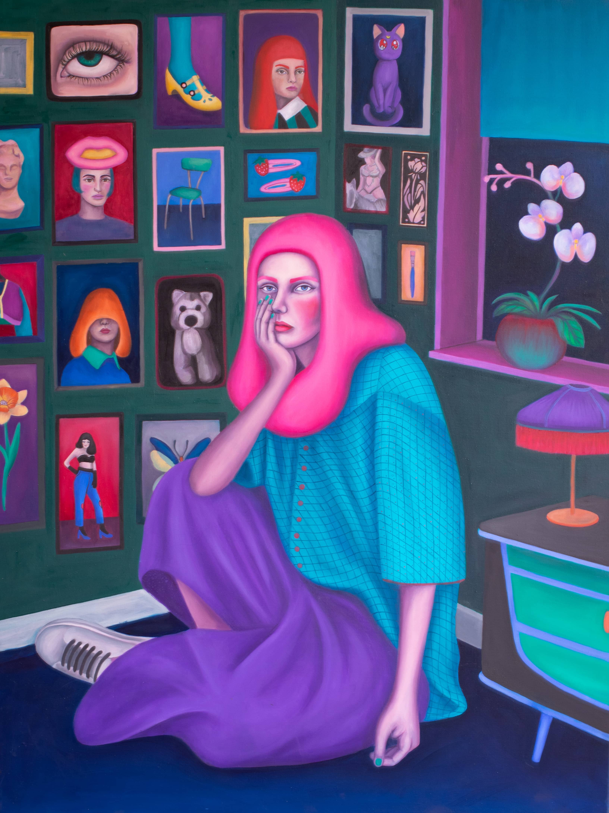
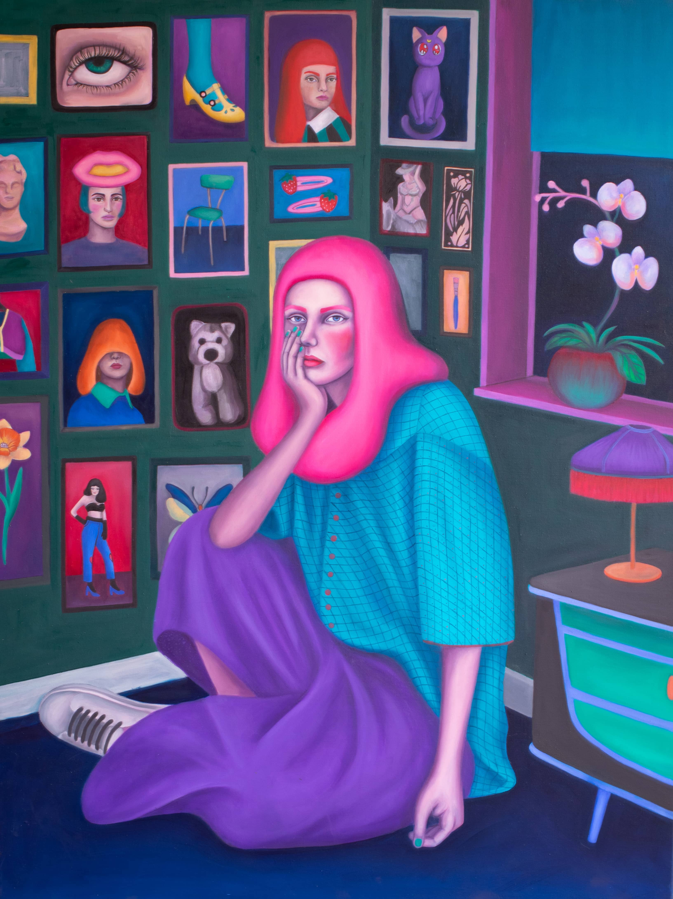
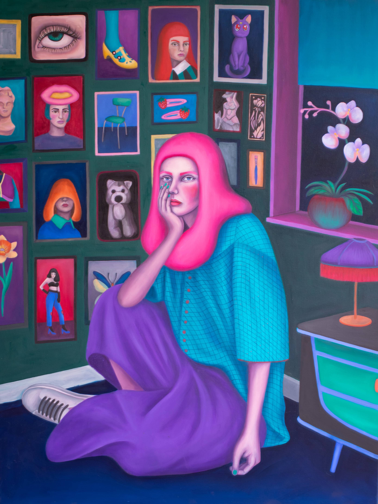

GALERÍA


 


Hola, mi nombre es Belén Camilo y soy pintora. Desde niña, siempre me destaqué en las manualidades, y tuve el apoyo constante de mi mamá y mi abuela, quienes me enseñaron diversas técnicas en este campo. Durante mi infancia en los 90, no contábamos con el acceso a internet que tenemos hoy, por lo que pasaba horas haciendo trabajos manuales. A los 12 años, conocí la pintura al óleo. Recuerdo que, mientras caminaba por un pasillo, vi un afiche que decía "Taller de pintura al óleo", y ese fue mi primer acercamiento a la pintura. Durante la enseñanza media, continué pintando por mi cuenta; solía pintar dibujos de enciclopedias y, con la llegada de internet, comencé a copiar imágenes que dibujaba con carboncillo. Lo que más me gustaba era pintar manos y pies con carboncillo, ya que podía observarme a mí misma y seguir los detalles. Siempre quise estudiar arte, pero mi puntaje no fue suficiente para ingresar a la universidad que deseaba. Empecé a estudiar diseño de producto, pero me di cuenta de que no era lo que buscaba. Aunque fue un desafío, me ayudó a reflexionar y a enfocarme en mi verdadera pasión. Finalmente, ingresé a la Universidad de Chile, donde me especialicé en pintura.
Uno de los aspectos más difíciles fue conocerme a mí misma y definir lo que realmente quería. Seguí diversas referencias para organizarme mejor, y me di cuenta de que siempre me ha gustado la moda, los textiles y la combinación de colores. Prefiero los colores brillantes y saturados, y he aprendido a componer y armonizar estos elementos, que son una gran fuente de información para mi trabajo. En mis composiciones, la figura femenina es la protagonista, y mi arte busca capturar su esencia y presencia de manera única y expresiva.

He simplificado mi enfoque al proceso de pintura, dejando de lado el boceto preliminar en favor de un método más intuitivo. En lugar de un boceto detallado, busco referentes visuales que me inspiran, ya sea a través de collages digitales, imágenes específicas o paletas cromáticas que capturan la esencia que deseo transmitir. Comienzo mi trabajo dibujando directamente sobre el lienzo con un pincel, utilizando un cuadriculado para guiarme en las proporciones y asegurarme de que los elementos estén en su lugar. Este primer dibujo con pincel establece la estructura básica de la pintura.
Una vez que tengo el dibujo base, procedo a aplicar capas delgadas de pintura. En cada capa, incorporo detalles adicionales que van surgiendo durante el proceso. Este enfoque me permite construir la imagen de manera gradual, revelando a cada personaje y detalle con el tiempo. Así, la obra se desarrolla de forma orgánica, y cada elemento contribuye al todo final de la pieza.

"Trabajo la técnica del oleo sobre tela y mi objetivo principal es resignificar el retrato creando personalidades que interpelen al observador, mediante el gesto y dando principal énfasis en la mirada".

"Mis retratos parten con un boceto estructural y desde ahí voy construyendo la imagen final, a partir de delgadas capas de pintura y veladuras , pero sin un objetivo preconcebido más que generar una personalidad imaginaria”.

“Mi producción pictórica manifiesta la identidad emocional de mujeres, a través, de retratos. Utilizo colores brillantes que evocan armonía, vibración y que a la vez componen movimiento y textura".

“El desafío siempre ha sido componer y armonizar todos estos elementos que es harta información”
Mi producción manifiesta la identidad emocional de mujeres a través de retratos. Utilizo colores brillantes que evocan armonia, vibración y que a la vez componen movimiento y textura. Trabajo la técnica del óleo sobre tela y mi objetivo principal es resignificar el retrato creando personalidadesque interpelen al observador, mediante el gesto y dando principal énfasis en la mirada. Mis retratos parten con un boceto estructural y desde ahí voy construyendo la imagen final, a partir de delgadas capas de pintura y transparencias, pero sin un objetivo preconcebido más que generar una personalidad imaginaria.